sessionInfo()Introduction to RBiotools
RBioTools facilitates comparative microbial genomics analyses directly in RStudio. By utilizing standard GenBank IDs, the package automates data retrieval and simplifies the creation of genomic figures.
Section 1: Prerequisites & Installation
To get started, please complete the following installations in order.
1. Install R and RStudio
You need both the programming language (R) and the interface (RStudio).
- Step A: Download and install R from The R Project.
- Step B: Download and install RStudio Desktop from Posit.
Note: Ensure you download the correct versions for your specific operating system (Windows, macOS, or Linux).
2. Install Build Tools
You need specific tools to compile R packages from source. Select your operating system below:
Install Rtools
You must install Rtools to build packages on Windows.
Download Rtools42 (or the latest version compatible with your R version) from CRAN Rtools.
Run the installer and follow the default instructions.
Install Xcode Command Line Tools
You need Xcode tools to compile packages on macOS.
Open your Terminal (Press
Cmd + Space, type “Terminal”, and hit Enter).Copy and paste the following command, then press Enter:
xcode-select --installA pop-up window will appear asking for confirmation. Click Install and wait for the process to finish.
3. Setup Your Workspace
Designate a specific folder on your computer to act as your Working Directory.
Suggestion
Create a folder named RBiotools in your Documents folder. Keep all your scripts and data here to avoid “File Not Found” errors later.
4. Download Workshop Files
Download the entire repository as a ZIP file.
- Go to the GitHub Repository: Click here to open the repository.
- Find the “Code” Button: Look for the green <> Code button near the top-right of the file list.
- Download ZIP: Click the button and select Download ZIP from the dropdown menu.
- Extract the Files:
- Locate the downloaded
.zipfile on your computer. - Right-click and select Extract All (Windows) or double-click it (Mac).
- Move the extracted folder to your Working Directory (e.g.,
Documents/RBiotools).
- Locate the downloaded
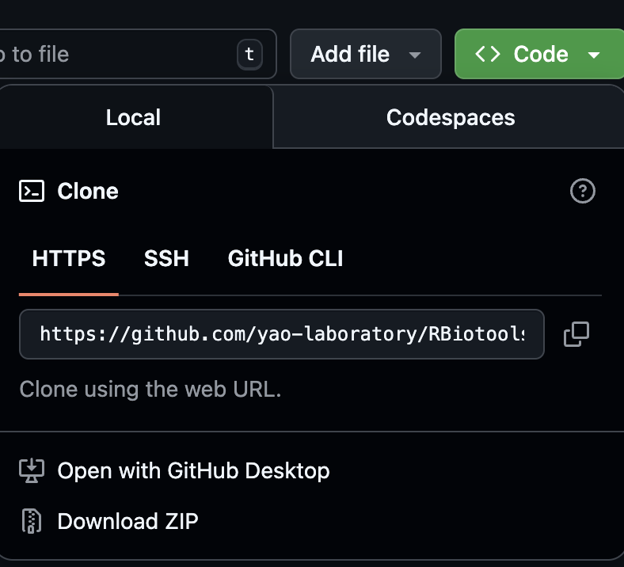
5. Launch & Verify
Open RStudio.
Go to File \(\rightarrow\) Open File… and select your
getting-started.Rscript.Check your R Version:
Run the command below in your Console to ensure you are using a compatible version of R.
Compatibility Note: These instructions were tested with R version 4.5.2 (2025-10-31). Older versions may behave differently.
Section 2: Install Packages and RBioTools
Note: Use the copy icon (clipboard) in the top-right of the code blocks to easily copy commands.
1. Install Dependencies
Run the following code to install the basic dependencies required for RBioTools. You only need to run this step once (the first time you set up R).
# 1. Install RMarkdown dependencies
install.packages("rmarkdown")
# 2. Install RBioTools dependencies
# These packages are not included in standard R installations
required_packages <- c("ape", "data.table", "fmsb", "ggplot2", "gplots",
"grImport", "gridExtra", "pheatmap", "rentrez",
"seqinr", "RCurl")
install.packages(required_packages)2. Install BioConductor Packages
Install msa and pwalign using the BiocManager.
# 1. Install BiocManager if missing
if (!requireNamespace("BiocManager", quietly = TRUE))
install.packages("BiocManager")
# 2. Install msa and pwalign
BiocManager::install(c("msa", "pwalign"), force = TRUE)
Troubleshooting msa
If the msa installation fails with a “non-zero exit status” error, try installing the development version directly from GitHub: https://github.com/UBod/msa
3. Install Helper Tools (Windows Only)
If you are on Windows, you may need the installr package to handle specific installation tasks. Mac/Linux users can skip this step.
install.packages("installr", repos ="http://cran.us.r-project.org")4. Load Libraries
library(msa)
library(installr)
Common Warning
You may see a warning message stating: “package(s) not installed when version(s) same as or greater than current”. You can safely ignore this.
5. Set the Working Directory
You must tell R where your files are located. Use the code tab below that matches your operating system.
Replace YourName with your actual username.
# Example Windows Path
setwd("C:/Users/YourName/Documents/RBiotools/")Replace YourName with your actual username.
# Example Mac Path
setwd("/Users/YourName/Documents/RBiotools/")6. Install RBioTools
Install the package from the local source file.
Important: Ensure the file RBiotools_0.5.7.tar.gz is inside the Working Directory you set in Step 5.
install.packages("RBiotools_0.5.7.tar.gz", repos = NULL, type = "source")7. Final Check
Load the library to verify installation was successful.
library(RBiotools)Section 3: Identify the Organisms
The first step is to choose the set of organisms you wish to analyze.
What is an “Organism” in RBioTools?
In this package, an organism is defined by its identifier:
- GenBank Accession IDs: Most organisms are specified using their unique ID from GenBank.
- Custom Genomes: Organisms not in GenBank can be added manually using the
addGenome()function.
3.1 Create a List of Organisms
To get started, we will define a sample set of E. coli organisms.
1. Define the E. coli List
Create a list of E. coli organisms and store them in an object named eColi.
eColi <- c(
"AP012306", # Escherichia coli str. K-12 substr. MDS42 DNA 3.976 Mb - smallest chromosome
"KK583188", # Escherichia coli DSM 30083 = JCM 1649 = ATCC 11775 4.907 Mb - type strain scaffold
"U00096", # Escherichia coli str. K-12 substr. MG1655 4.642 Mb - first E. coli genome sequenced
"CP000802", # Escherichia coli HS 4.644 Mb - group A representative, commensal
"CP000800", # Escherichia coli E24377A 4.980 Mb - group B1 representative
"AP009378", # Escherichia coli SE15 4.717 Mb - group B2 representative, commensal
"FM180568", # Escherichia coli 0127:H6 E2348/69 4.966 Mb - group B2 representative, enteropathogenic
"CU928163", # Escherichia coli UMN026 5.202 Mb - group D representative
"CP008957", # Escherichia coli O157:H7 str. EDL933 5.547 Mp - group E representative
"CP027027", # Shigella dysenteriae strain E670/74 5.037 Mb - Shigella dysenteria representative
"CP026802", # Shigella sonnei strain ATCC 29930 4.975 Mb - Shigella sonnei representative
"CP026877", # Shigella boydii strain ATCC 35964 5.129 Mb - Shigella boydii representative
"CP026793", # Shigella flexneri strain 74-1170 4.734 Mb - Shigella flexneri representative
"CP015831" # Escherichia coli O157 strain 644-PT8 5.831 Mb - largest chromosome
) 2. Define the Proteobacteria List
Create a list of Proteobacteria organisms and store it in the variable proteobacteria.
proteobacteria <- c(
"CP018228", # Rhizobium leguminosarum strain Vaf-108 Phylum: Proteobacteria (alpha)
"CP017405", # Bordetella pertussis strain J448 Phylum: Proteobacteria (beta)
"CP008957", # Escherichia coli O157:H7 str. EDL933 Phylum: Proteobacteria (gamma)
"HG530068", # Pseudomonas aeruginosa PA38182 Phylum: Proteobacteria (gamma)
"CP002031", # Geobacter sulfurreducens KN400 Phylum: Proteobacteria (delta)
"CP002332" # Helicobacter pylori Gambia94/24 Phylum: Proteobacteria (epsilon)
)3.2 Verify and Download Data
With your sample list ready, run downloadGenBank() to generate a data frame containing the biological details for each organism.
Checking the E. coli List
downloadGenBank(eColi)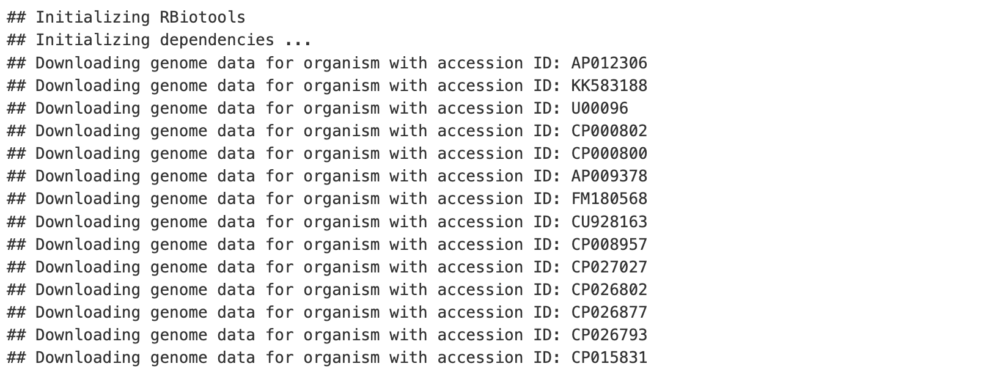
Checking the Proteobacteria List
downloadGenBank(proteobacteria)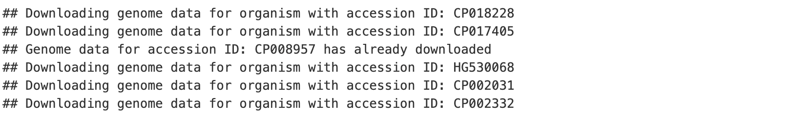
Section 4: Explore functions that make plots and figures
4.1 Dendrograms
Generating a dendrogram from 16S rRNA genes is a straightforward process, though runtime varies based on the dataset size.
Runtime Notice
Fetching data from GenBank may take several minutes. The proteobacteria list is shorter than the eColi list and will process much faster.
Dendrogram for E. coli
# This first plot is for the eColi and Shigella organisms
dendrogram16S(eColi)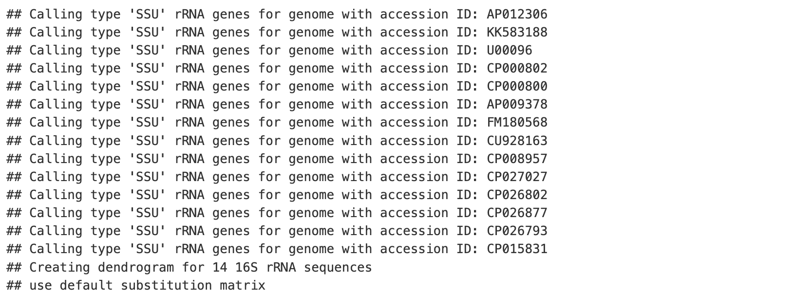
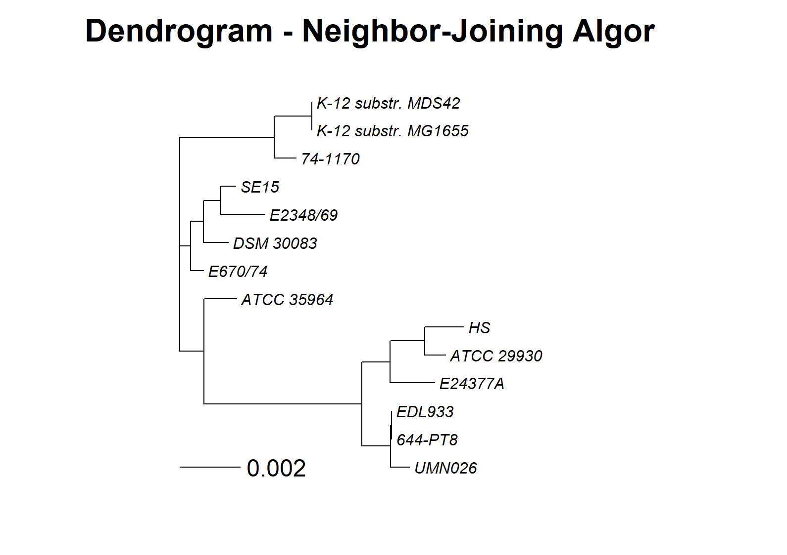
Dendrogram for Proteobacteria
# The second plot is for the proteobacteria organisms
dendrogram16S(proteobacteria)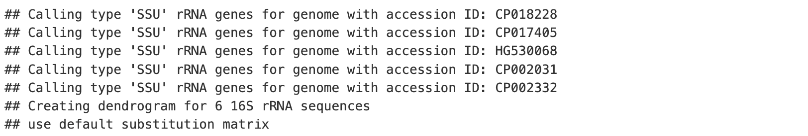
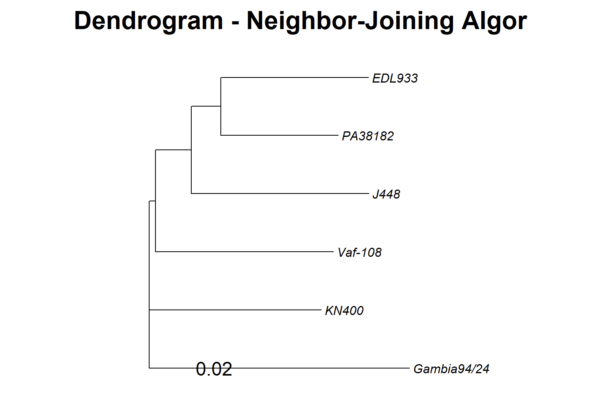
4.2 Genome Atlas
To create a genome atlas for a specific organism from an existing list (like eColi or proteobacteria), simply select it using its index.
# Select the first item (AP012306) using list indexing
createAtlas(eColi[[1]])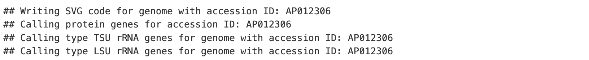
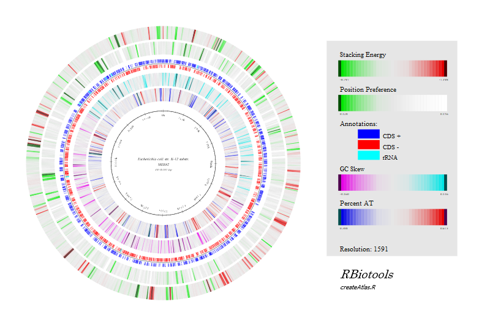
To view the file
The graphic generated in this step is saved as an SVG file in your working directory.
- Open your computer’s file browser (Explorer/Finder).
- Navigate to your working directory.
- Right-click the SVG file and select Open with.
- Choose a web browser (e.g., Chrome, Firefox, Safari) to view the image.
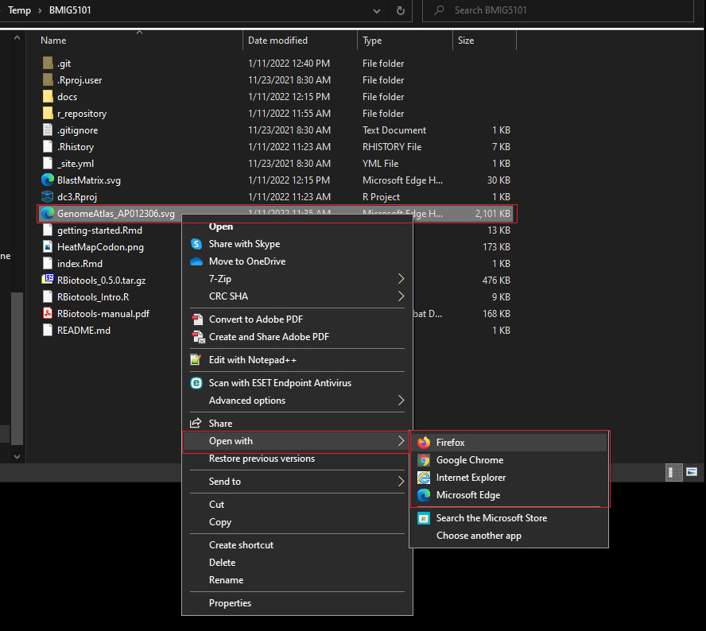
Analyze a Single Organism
If you need to analyze an organism not currently in your list, simply locate its accession ID on GenBank and pass it directly to the function as shown below.
# Manually input a GenBank Accession ID
createAtlas("AP012306")4.3 Amino Acid Usage Plot
The plotUsage function offers extensive customization options. Check the documentation to explore the full range of parameters.
plotUsage(eColi[1])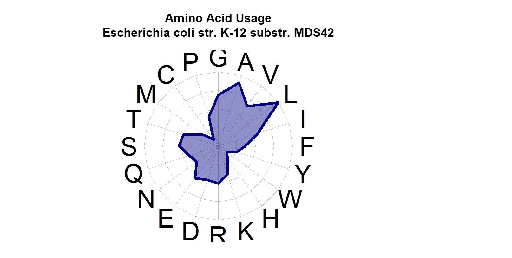
4.4 Codon Heat Map
Heat maps are most informative when analyzing distantly related organisms, such as our Proteobacteria group.
plotHeatMapCodon(proteobacteria)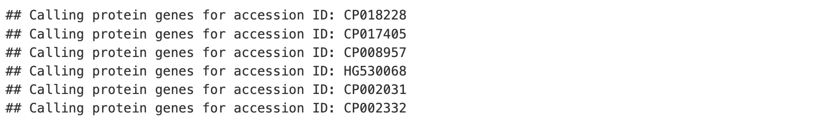
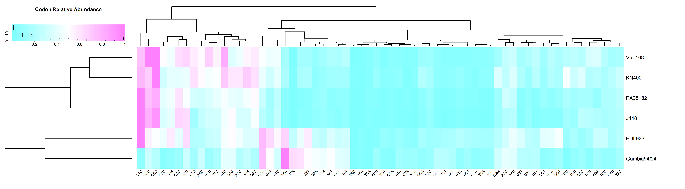
How to view the PNG in RStudio
The graphic generated in this step is automatically saved as a PNG file.
- Open the Files tab in RStudio (usually in the bottom-right pane).
- Navigate to your working directory. (Tip: You may need to click the Refresh button if the file doesn’t appear immediately.)
- Click on
HeatMapCodon.pngto open it.
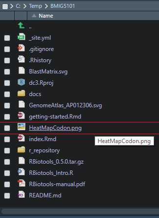
4.5 Blast Matrix
BLAST matrices function best with groups of closely related organisms (e.g., E. coli).
To generate this visualization, we first build a Homology Matrix using runLinclust() and then plot it.
# 1. Build the homology matrix (protein grouping)
proteinGrouping <- runLinclust(eColi)
# 2. Plot the BLAST matrix
plotBlastMatrix(proteinGrouping)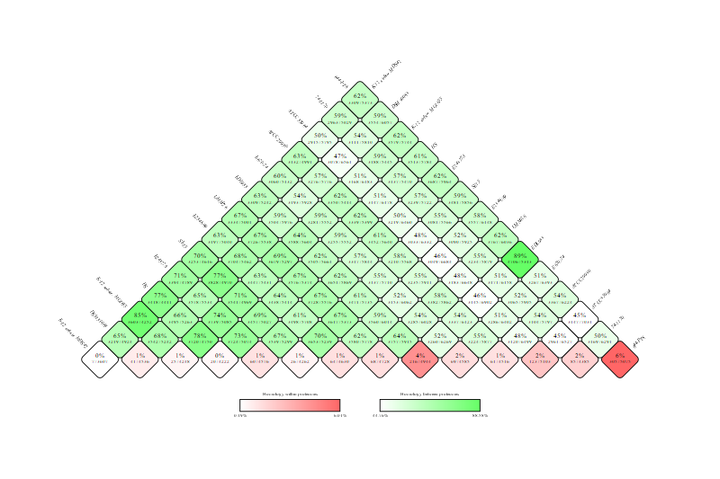
How to view the SVG file
This output is saved as an SVG file.
- Navigate to your working directory in your computer’s file browser.
- Right-click the file and select Open with → Web Browser.
Understanding the Homology Matrix
The proteinGrouping object created by runLinclust is a table organized as follows:
- Rows: Represent the different protein groups.
- Columns: Represent the individual organisms.
- Values: Represent the number of proteins an organism contributes to that group.